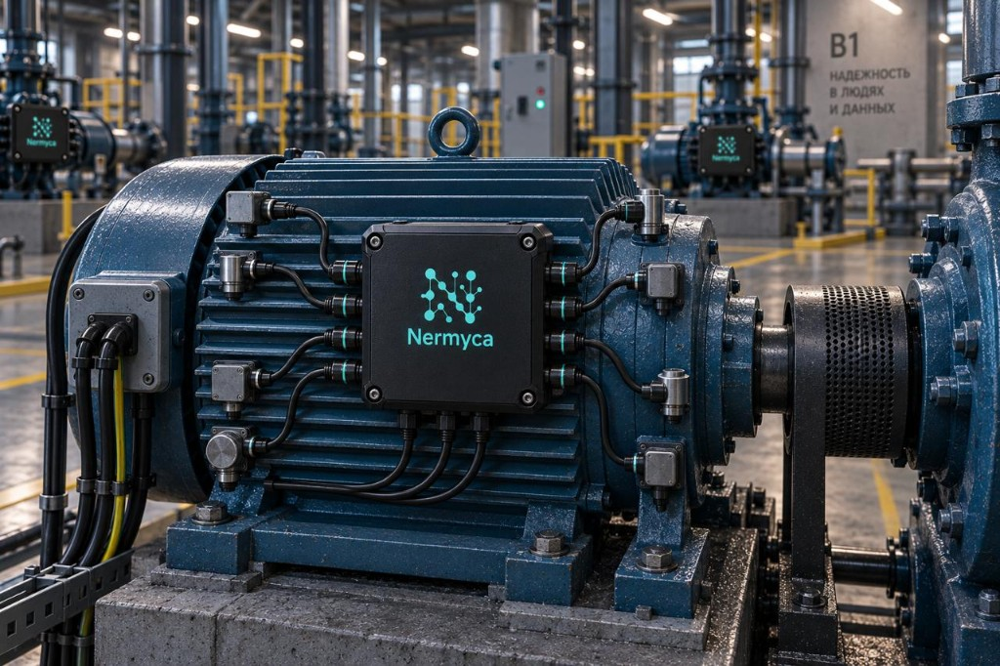

Боль уже есть
SCADA, ТОиР, ERP, документы и люди живут в разных контурах. Когда машина начинает «плыть», картину снова собирает человек — вручную и поздно.
Мы строим Nermyca вокруг актива: телеметрия, события, история, документы, компетенции и ресурсы связываются в объяснимый инженерный контекст. Не ещё один экран с графиками — слой понимания с человеческим решением в центре.
От сигнала — к ситуации. От ситуации — к обоснованному действию.
SCADA, ТОиР, ERP, документы и люди живут в разных контурах. Когда машина начинает «плыть», картину снова собирает человек — вручную и поздно.
Датчиков и систем всё больше, а опытных инженеров — всё меньше. Ценность смещается от сбора данных к удержанию контекста и организационной памяти.
Мы делаем не мониторинг и не «чёрный ящик» ИИ. Мы собираем объяснимый контекст вокруг актива — и оставляем решение за человеком.
Предметная модель + объяснимая цепочка до действия + память предприятия + локальное развёртывание. Полевой узел Octopus — будущий аппаратный вход для «немого» парка.
Каждый источник решает свою задачу. Но когда состояние конкретной машины меняется,
инженеру приходится вручную сопоставлять показания, историю ремонтов, наработку, документацию, наличие деталей и
чужой опыт.
В этот разрыв и входит Nermyca: не вместо существующих систем, а как слой, который собирает вокруг актива одну
промышленную ситуацию и доводит её до объяснимого плана — с утверждением человеком.
Данные на заводе уже есть.
Не хватает системы, которая делает из них основание для
решения.
Час простоя важного агрегата на среднем заводе обходится предприятию существенно. На непрерывном производстве и в энергетике цена опоздания ещё выше.
Внезапный ремонт, простой и брак обычно обходятся предприятию намного дороже, чем вмешательство, спланированное на пару дней раньше.
Не абстрактная «экономия эффективности», а раннее понимание ситуации: меньше сюрпризов, быстрее собранная картина, основание действовать до аварии.
Время от сигнала до собранной картины и до решения инженера. Число ложных тревог. Доля ситуаций, где план утвердили без ручного сбора контекста с нуля.
Рынок промышленного интернета вещей и систем состояния оборудования велик и растёт. Стратегия Nermyca —
узкий вход: критичные активы цеха, развёртывание на площадке предприятия, объяснимый инженерный контур.
Первый фокус — Россия, СНГ и близкие отрасли: энергетика, добыча, процессные производства.
Путь роста: пилоты на реальных площадках, затем платящие контуры — без гонки за массовым охватом в первый
год.
Оплата за контур — площадка, число активов, линия — и внедрение, а не «за каждый датчик».
Типовой путь: пилот на ограниченном контуре, затем годовое сопровождение с расширением охвата и глубины
интеграций. Условия и объём — в прямом разговоре.
Octopus добавит аппаратную выручку позже. Основа первой версии — программный контур с высокой маржой после
внедрения.
Nermyca продаёт время до понимания — и возможность вмешаться до аварии, а не после.
Аварийного порога ещё нет. Производство продолжается. Но Nermyca замечает постепенный рост вибрации и температуры подшипникового узла.
Рост температуры и изменение характера вибрации рассматриваются вместе — в контексте одного физического актива.
Похожее сочетание признаков наблюдалось 14 месяцев назад. Тогда осмотр выявил износ подшипника.
После последней замены узел отработал 8 300 часов. Известны история ремонта, установленная деталь и результаты последующих проверок.
Документация и накопленный опыт предприятия указывают на необходимость проверки подшипникового узла. Рядом — подходящие специалисты и применимая запасная часть.
Инженеру уже не нужно собирать картину с нуля: перед ним собранная ситуация и предложенный план работ. Решение — за ним.
Насос ещё работает.
Но проблема уже видна, а дальнейшие действия можно утверждать.
Nermyca читает промышленные протоколы (Modbus, OPC UA, MQTT, S7, EtherNet/IP) и связывает наблюдения с активами, событиями и процессами — поверх уже работающего контура.
Там, где цифровой контур слабый, Nermyca поднимает собственный контур сбора данных и модель активов. Octopus расширит этот путь в железо.
Два входа на рынок: дополнить то, что есть,
или построить необходимый контур с
нуля.
Измерения, параметры, режимы работы.
Эксплуатация, неисправности, изменения.
Осмотры, ремонты, замены, профилактика.
Узлы, агрегаты и технологические зависимости.
Регламенты, инструкции, технические сведения.
Сохранённый инженерный опыт и объяснимые гипотезы по похожим случаям.
Компетенции, экспертиза и опыт специалистов.
Необходимые детали и материалы.
Сегодняшний ремонт становится знанием для завтрашней диагностики.
Реальный объект: оборудование, датчик, система или человек.
Значимое изменение состояния и его связи.
Диагностика, проверка, обслуживание, ремонт.
Человек утверждает план. Система даёт основание, а не подменяет инженера.
Octopus — проектируемый полевой узел Nermyca. Это будущий аппаратный вход: подключение датчиков к существующему парку там, где цифровой контур ещё слабый. Сегодня Nermyca уже принимает данные по промышленным протоколам; Octopus расширит вход в «немой» парк.

Сегодня вход — через промышленные протоколы. Octopus расширит контур для оборудования, которое иначе остаётся немым.
Каждый закрытый инцидент усиливает систему. Nermyca сохраняет инженерный опыт как память предприятия — и это удерживает клиента.
Nermyca рассчитана на локальное развёртывание. Телеметрия, история, документы и инженерный контекст не уходят во внешние облачные ИИ-сервисы. Даже языковой ассистент — только локально на площадке и только поверх уже проверенных фактов Nermyca.
Есть лабораторный цех и версионированная сквозная история: деградация оборудования → событие и инцидент → похожие случаи → объяснимый диагноз и рекомендации → документы, специалисты, план → утверждение человеком → контролируемый процесс. Это уже проверяемый продукт, а не презентация.
Ценность — в сборке ситуации, объяснимом плане и человеческом решении, а не в ещё одном графике.
Читать существующие протоколы или поднимать свой контур — без «сначала оцифруйте всё».
Nermyca уже живёт. Octopus — проектируемый аппаратный вход для парка, который иначе остаётся немым.
Диагноз и рекомендации строятся по явным правилам и фактам; ИИ не подменяет инженерное решение.
Промышленный контекст и необязательная локальная языковая модель остаются внутри периметра предприятия.
Успешный случай становится частью системы — и повышает стоимость переключения.
В основе Nermyca — физический актив, его состояние, история, события и связанные с ним
процессы.
Поэтому тот же подход применим не только к стационарному промышленному оборудованию. Автомобиль, локомотив,
судно, автономные технические системы или другой сложный технический объект уже содержит множество собственных
датчиков и систем диагностики.
В этом случае Nermyca не обязательно создавать новый контур измерений. Она может использовать существующие
данные и связывать их с конкретными узлами, историей эксплуатации, обслуживанием, документацией и знаниями
специалистов.
Меняется источник данных и объект применения.
Принцип связанного контекста
остаётся тем же.
Промышленность — первый рынок Nermyca, а не архитектурная граница.
Актив, событие, процесс, наблюдения, знания, компетенции, склад и применимость замен.
Modbus TCP, OPC UA, MQTT, S7, EtherNet/IP — сбор данных только на чтение.
Версионированная история демонстрационного насоса: от деградации до контролируемого процесса с утверждением человеком.
Углубление диагностики, планов, интеграций и операторского контура.
Пилотный аппаратный узел для «немого» парка.
Проверка на реальном производстве.
Ядро Nermyca, промышленный сбор данных и воспроизводимый демонстратор уже работают. Следующий этап — пилот на предприятии и развитие полевого узла Octopus. Приглашаем инвестора и отраслевого партнёра на этот путь.
Раунд на выход в пилоты на реальном производстве, упаковку демонстратора для заказчика, углубление интеграций и первый контур Octopus. Объём и условия — в прямом разговоре.